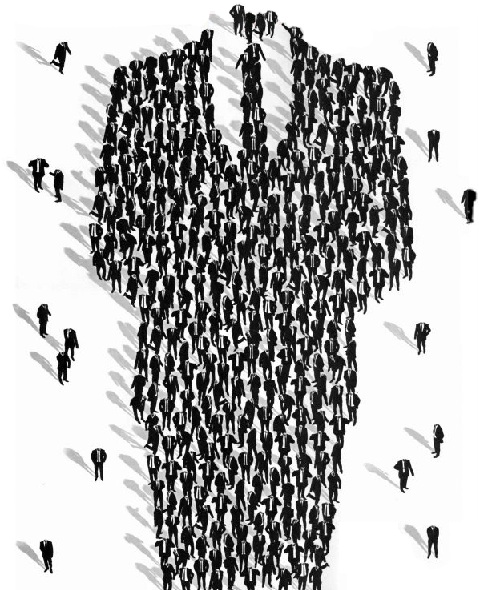

HOME PAGE

WELCOME
My name is Roscoe Peyll, and I'm currently in my last year as an Information Technologies undergraduate student at the University of Central Florida.
I also use the internet.
I'm also not very good at taking pictures... so for now... I present to you a picture of the people who use the internet (you can't really tell who they are - that's the point).
On a side note, this e-portfolio is currently (and will be for a while) a work in progress. I'm just going to be updating it over the course of this semester and a little bit beyond... until I can set up my own server and I'll host a newer version of this e-portfolio.
This site is also being used as a project for Web Based IT... I have to create a lot of websites this semster, and I don't think I could come up with enough original content/layouts to use for each one individually, so I'm combining some of my different class projects.